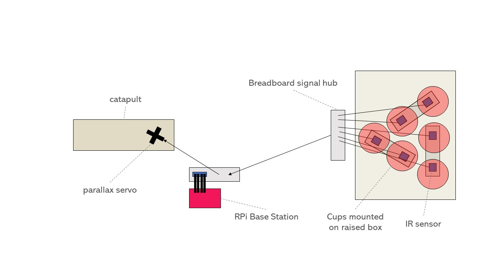

A robot to help you win any game of pong.
Find Out Moreih258
kes334
sc30
The purpose of our final project is to make Water Pong a more accessible game to everyone. This robot can be used as a partner when there are not enough people, or as assistance to people who can not aim or throw by themselves. The robot detects cups and aims the catapult entirely autonomously. All the user must do is load and release the catapult.
The overall schematic of the robot is here:
There are three main components to the robot. IR sensors detect cups and send GPIO inputs to the Raspberry Pi, which then controls the Parallax standard servo motor. The full system includes the cup stand, the launching mechanism itself, and the software, which includes the aiming system, reracks, and other gameplay. The entire game is controlled through a Raspberry Pi and the gameplay is displayed on a PiTFT. Each of the parts below was tested individually before full system integration, but end-to-end testing of the entire gameplay was our main source of testing.
The Cup Stand Setup with cups labeled in order
The IR sensors under each cup
A video showing cup detection, indicated with green LEDs, in real time.
The cup consists of spots for 6 cups, labeled 1 through 6. Under each cup, there is an IR sensor connected to a GPIO pin on the Raspberry Pi. The sensors have been calibrated to have a range of around 3-4cm and send an input to the Raspberry Pi everytime they detect a cup. When a sensor detects that there is a cup, the spot shows up red on the PiTFT screen, when the cup is not sensed anymore, the spot renders green. When all 6 sensors do not sense a cup simultaneously, the screen changes to a "You Win" screen.
When testing the cup detection capabilities, we used the potentiometer on the IR sensor to calibrate its detection distance. Turning the potentiometer changed how far away the object could be before the sensor saw it. Becuase we were using digital signals only, we needed to closely calibrate this threshold value to where the cups would be placed relative to the sensor. The sensors had a range of a couple centimeters, which was more of a concern for the 4-pin sensors, which laid flat on the breadboard. These sometimes had trouble sensing the cups. In order to fix this we added an inch-long "foot" to the bottom of some cups which just brought a detectable surface closer to the sensor for the ones that were more finicky.
The catapult and servo set up. The catapult is secured to a stage, which is secured to a parallax standard servo in the front half of the catapult. The back end of the catapult is allowed to move freely as the servo rotates.
The basis of the aiming algorithm. For cups 1 and 5 the catapult aims straight. For cups 2 and 4 the catapult shifts to the left. For cups 3 and 5 the catapult shifts to the right.
A video of the robot staying in the center when aiming for cup one, moving to the right when aiming for cup 2, moving back to the center when its turn is over, and moving to the left when it aims for cup 3.
The water pong robot is capable of detecting cups and aiming the catapult entirely autonomously. At the beginning of each turn, the robot will aim in one of three directions, as shown above, depending on which cup it is aiming for. The robot will only aim for cups that remain on the table, and the PiTFT will state which cup the robot is aiming for. The robot will aim for cups in ascending order starting from cup 1. The servo will aim the catapult in the proper direction at the start of each turn, so all the user must do is wind the catapult and release the ball.
There were several ideas on how to aim the catapult, the first being using a servo to tilt the entire catapult platform up and down with a second servo shifting it left and right. The second idea was to use an entire system of gears, pinions, and servos to be able to move the entire catapult platform in both x and y directions. Both of these ideas were eventually proven to not work as the margin of error for the catapult's depth was roughly the same distance as how far the cups were sitting vertically, meaning that with this particular launching mechanism, it was not possible or worth it to spend time adjusting the aim forwards and backwards. Because of this, the aiming algorithm focuses solely on aiming in the left and right direction instead of the forward and backwards position.
The normal gameplay screen with all cups still in the game
# Servo controls. If we are aiming to cup 2 and 4
# we move slightly to the left, if we're aiming to
# cup 3 and 5 we move slightly to the right, and
# if we're aiming towards cup 1 and 5 we stay in
# the center
def bot_shooting(cup):
if cup == "cup2" or cup == "cup4":
servo.ChangeDutyCycle(2.5)
time.sleep(.2)
elif cup == "cup3" or cup == "cup6":
servo.ChangeDutyCycle(3.5)
time.sleep(.2)
elif cup == "cup1" or cup == "cup5":
servo.ChangeDutyCycle(3)
time.sleep(.2)
Code Snippet of the function used to control the servo used to aim the catapult. The DutyCycle of the standard servo was used to control the direction
The software was all written in a single file in a modular format. The first section consisted of setting up all GPIO connections, including the servo, the 6 sensors necessary for sensing the cups, and the quit button. The second section was a function used to control the standard servo that can be seen in the code snippet above. It uses the DutyCycle of the standard servo to control its left and right orientation. The DutyCycle numbers were decided through vigorous testing of how the DutyCycle corresponged to a 0-180 degree angle for this particular servo. The third section would be the function where the robot chooses which cup to aim for.
Code snippet for the aiming function:
# This is the callback function related to button 23, when senses button 23 pressed,
# it it the robot's turn and it aims toward the correct cup, after you press it again, it
# aims back towards the center and it's turn is done
shooting = False
def turn_change(channel):
global shooting
global turn
global aim_cup
if shooting == False:
shooting = True
bot_shooting("cup" + str(aim_cup + 1))
turn = "My Turn"
elif shooting == True:
shooting = False
bot_shooting("cup1")
turn = "Your Turn"
GPIO.add_event_detect(23, GPIO.FALLING, callback=turn_change, bouncetime=500)
This is a callback function, where when the user presses button 23 on the PiTFT, it signifies to the robot that it is its turn. The robot then picks which cup to aim for in ascending order. For example, if cup 1 is still in the game it picks cup 1, if not it picks cup 2, however if cup 2 is also gone, it then picks cup 3 and so on. It then calls the bot_shooting function to aim for the correct cup. The user should then load and fire the catapult. Afterwards the user should push button 23 again to signify the end of their turn. At this point the robot aims back towards the center.
The last section of the code is the actual rendering of the PyGame screens on the PiTFT. Whenever a cup is sensed by the corresponding IR sensor, the RPi renders the cup as a red circle on the screen. Whenever the cup is not sensed, that same spot is rendered as a green circle instead. Whenever all cups are gone which means all the spots being rendered are green, the screen transitions to a win screen. When a user wants to rerack, they press the rerack button in the corner. The screen then renders a "Rerack screen" that consists of one giant Green button in the center that says done. When the user is done either reracking to a diamond or a small triangle (reracking consists of moving the cups into a different formation to raise your chance of hitting cups), they then press the green done button and the game continues. All testing done for the software and PiTFT display was done through thorough playthroughs of the game.
The Water Pong Robot was a success. By the end, it was able to play full game: it could rerack, sense when cups were hit, sense when it had won, and aim for the next available cup. We met our goals of making an automated robot that only needed to be manually loaded. Additionally, we were able to make three different screens and utilize PiTFT touchscreen buttons, which increased the visual appeal of the system and makes it much more understandable for the layperson. We had people test the robot who were able to follow along with the game despite knowing nothing about how the IR sensors, servo, and logic actually worked. Through all periods, the robot was very successful. StephTFT can not make every shot, but he has a respectable hit rate average and can clear the table in a 10 minute game.
This project brought together many of the things we had learned in the semester. We were able to use GPIO signals to work with sensors and actuators to create a robot with advanced capabilites. We were easily able to translate our experience with continuous rotation servos and external push buttons into writing code to work with the IR sensors and new servo. This allowed us to reliably detect cups and adjust a standard servo accordingly. We also were able to develop a single application which was able to run an entire game of water pong, with capabilities such as cup aiming and re-racks. The display was shown on the PiTFT screen throughout, which required knowledge of PyGame and other screen rendering techniques. Lastly, we used both physical push buttons and touchscreen buttons on the PiTFT, therefore bringing together the different methods of accepting user input that we had learned this semester.
Improvements to the robot could focus on imprvoing the hardware of the system. For example, we used cardboard and tape to secure many of the parts. This required lots of adjusting as we tested, especially with the catapult. Given the time and resources, we would improve the catapult stage to be more secure and better attached to the servo with screws. Given a larger playing surface and more cups, it would be beneficial to explore the use of another servo, perhaps attached to a rack-and-pinion, to move the catapult closer or further from the cups. Given the circumstances here, we did not need to adjust the catapult beyond its shooting angle, but this would be a valuable future addition to allow the robot to play larger, more advanced, games. Additionally, we could explore using another automated actuator to wind the catapult, which would further reduce need for human input. On the software side, further work could focus on allowing users to select which cup to aim at and override the default aiming of the robot. This would increase user agency while preserving the robot's ability to aim autnonomously. We would also include software to detect cheating during times like re-racking. Right now we rely on trust to prevent the opponent from removign extra cups when they have entered the rerack screen. Additional code could be added to make sure that the same number of cups are present before and after the reracking. Altogether, the robot functions as we had planned and was accurately able to clear multiple cups during testing and demostration periods.
For this project, we used recycled materials to build the cup stand and catapult stage. This was done using cardboard boxes that we cut into shape. The catapult was made using a kit, which we purchased ourselves. The remainder of the materials were borrowed from the ECE5725 lab. These included 5 breadboards, jumper wires, 4 3-Pin Flying Fish IR Sensors, 2 4-Pin IR Sensors, 1 parallax standard servo, a 6V battery pack, and 6 1K resistors. We also used a RaspberryPi 4, RPi power cord, 16GB SD card, and PiTFT display, all of which were provided over the course of the ECE5725 class. All of these parts, with the exception of the catapult, were returned to the Cornell University ECE department.
We worked together throughout all stages of project conception and development. Each week, we both wrote the weekly update report using Google Docs, which allowed us to work together simultaneously. We met in person to build the hardware pieces and code on the RPi. During development, Irene focused on writing and debugging the pong.py application, while Kirsten focused primarily on calibrating and designing the hardware. We built the catapult together and also did all testing in-person. Lastly, we created the video, final presentation, and website report together.
We used the following datasheets and reference materials when completing our project:
Questions about our Water Pong set or want one as your own? Send us an email and we will get back to you as soon as possible!
{kind=link}